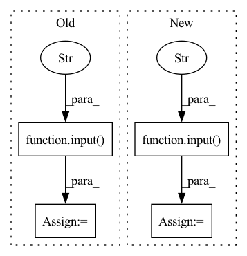

Pattern ID :15388
Before Change
uuid = start(ld_helper, 40, model_uuids[int(choice)])
print("\n")
print("A new sMCI vs pMCI model has been trained under the tag: {}".format(uuid))
choice = input("Would you like to evaluate it (Y/n)?" )
print("\n")
if (int(choice) == "y" or "Y" or ""):
evaluate_model(device, uuid, ld_helper)
else:After Change
else:
print("\n")
print("No models available. Please train a new model.")
choice = input("Would you like to train a new model[0,1]?: " )
if (int(choice) == 1):
print("Training a new NC vs AD model.")
print("\n")In pattern: SUPERPATTERN
Frequency: 3
Non-data size: 4
Instances Fragment ID: 52141256
Project Name: mcspooder/camull_net
Commit Name: e7932133ad962f30ee5d65204640589e4ae65ffe
Time: 2022-05-21
Author: danny@remy.localdomain
File Name: camull_cli.py
M Class Name: AnonimousClass
N Class Name: AnonimousClass
M Method Name: transfer_learning(1)
N Method Name: transfer_learning(1)
M Parent Class:
N Parent Class:
M File Name: camull_cli.py
N File Name: camull_cli.py
M Start Line: 117
M End Line: 138
N Start Line: 117
N End Line: 133
Before Change
np.random.shuffle(perm)
image_shuffled = new_image_data[perm]
label_shuffled = new_label_data[perm]
folder = input("what your data should be named: " )
os.mkdir(os.getcwd() + f"\\training_data\\augmented\\{folder}")
np.save(os.getcwd() + f"\\training_data\\augmented\\{folder}\\{folder}X.npy", image_shuffled)
np.save(os.getcwd() + f"\\training_data\\augmented\\{folder}\\{folder}Y.npy", label_shuffled)
print("augmented data saved!")After Change
image_shuffled = new_image_data[perm]
label_shuffled = new_label_data[perm]
print("operations complete! previous data amount was", len(imageData), "new data amount is", len(image_shuffled))
folder = input("what your data should be saved as: " )
print("saving data!")
os.mkdir(os.getcwd() + f"\\training_data\\augmented\\{folder}")
np.save(os.getcwd() + f"\\training_data\\augmented\\{folder}\\{folder}X.npy", image_shuffled)
np.save(os.getcwd() + f"\\training_data\\augmented\\{folder}\\{folder}Y.npy", label_shuffled) Fragment ID: 52141251
Project Name: edilgin/deepforspeed
Commit Name: da409c9554fc09a0362c843c94b3811093224821
Time: 2022-03-07
Author: fehimornek@gmail.com
File Name: processData.py
M Class Name: AnonimousClass
N Class Name: AnonimousClass
M Method Name: augmentData(0)
N Method Name: augmentData(0)
M Parent Class:
N Parent Class:
M File Name: processData.py
N File Name: processData.py
M Start Line: 154
M End Line: 174
N Start Line: 154
N End Line: 176
Before Change
print("0. NC vs AD")
print("1. sMCI vs pMCI")
print("\n")
choice = input("Which task would you like to perform?: " )
print("\n")
task = Task.NC_v_AD
ld_helper = LoaderHelper(task)After Change
print("To train for sMCI vs pMCI you need transfer learning from a NC vs AD model. Would you like to transfer learning from an existing model or train a new NC vs AD model?\n")
print("0. Existing model.")
print("1. Train a new NC vs AD model.\n")
choice = input("Please select an option: " )
def fetch_models_from_db():
global conn Fragment ID: 52141254
Project Name: mcspooder/camull_net
Commit Name: 610e94803edbb70039d9eb50e822ec642122d5f6
Time: 2022-04-22
Author: danny@remy.localdomain
File Name: camull_cli.py
M Class Name: AnonimousClass
N Class Name: AnonimousClass
M Method Name: train_new_model_cli(1)
N Method Name: train_new_model_cli(1)
M Parent Class:
N Parent Class:
M File Name: camull_cli.py
N File Name: camull_cli.py
M Start Line: 131
M End Line: 141
N Start Line: 136
N End Line: 176